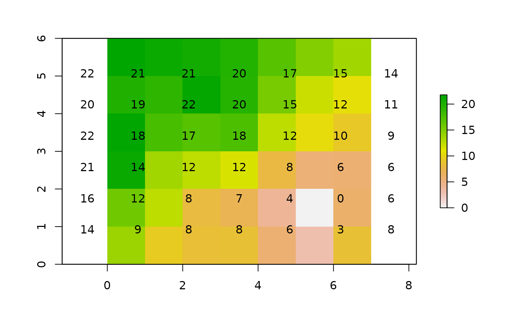

Calculates the accumulated cost surface from one or more origins.
accCost(x, fromCoords)
| x | object of class |
|---|---|
| fromCoords | origin point locations (SpatialPoints, matrix or numeric class) |
a RasterLayer object
If more than one coordinate is supplied in fromCoords, the function calculates the minimum least-cost distance from any origin point.
The function uses Dijkstra's algorithm (as implemented in the igraph package).
E.W. Dijkstra. 1959. A note on two problems in connexion with graphs. Numerische Mathematik 1, 269 - 271.
library("raster") # example equivalent to that in the documentation on r.cost in GRASS r <- raster(nrows=6, ncols=7, xmn=0, xmx=7, ymn=0, ymx=6, crs="+proj=utm +units=m") r[] <- c(2, 2, 1, 1, 5, 5, 5, 2, 2, 8, 8, 5, 2, 1, 7, 1, 1, 8, 2, 2, 2, 8, 7, 8, 8, 8, 8, 5, 8, 8, 1, 1, 5, 3, 9, 8, 1, 1, 2, 5, 3, 9) # 1/mean: reciprocal to get permeability tr <- transition(r, function(x) 1/mean(x), 8) tr <- geoCorrection(tr) c1 <- c(5.5,1.5) c2 <- c(1.5,5.5) A <- accCost(tr, c1) plot(A)text(A)